iTest User's Guide
iTest 4.5 Release Notes
Date
April 2025
Prepared By
ADT Software Engineering
A&D Confidential Document Distributable only to A&D Customers
Copyright A&D Company, Limited
A&D Technology Inc.
The iTest 4.5 release includes multiple performance and cosmetic updates, feature enhancements, and bug fixes.
A&D Technology relies on a series of patches to add new features and address issues between version releases. Previously, the patching process utilized PatchUpdate.exe in order to apply patches; this tool has been deprecated.
To patch iTest, run iTestXXSetup.exe for the version you would like to patch, where XX is the product version (e.g., iTest45Setup.exe).
iTest now includes the voSysPatchStatus channel in order to determine the patch level status. This channel allows you to quickly identify if the running software versions for iTest and LabAgent are outdated.
iTest can now run in "headless" mode, where a GUI application (e.g., AutomationPanel) is not launched on startup. This allows for operators to perform testing on stations within a lab via LabCentral's Free-form Dashboards feature. While iTest is running in headless mode, an iTest icon will display in the Windows system tray.
iTest Icon
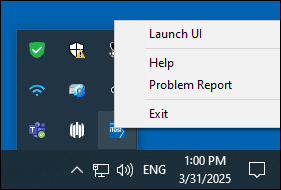
The Chart panel's configurations can be saved to a template, and then loaded in DspDrv_AP for users with the proper security permissions. This feature replicates the custom saved configurations from LivePlot.
The Data Log Viewer Panel now supports the following properties:
The Gauge panel now includes the Error Color property. This property allows you to specify the translucent color of the arc between the target and current values.
Gauge Panel - Error Color
AutomationPanel will display the running state of important processes, such as data_engine and rdbserv, in the Process Indicator. This indicator is located in the status bar, where it will either be green or red based on the running state of each process. Hovering over the Process Indicator will display which processes are being reported.
Process Indicator
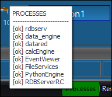
Python script arguments can now be set via the Python Script Message dialog. This dialog is available for Button panels that have the Message Type property set to Python Script.
Python Script Message Dialog
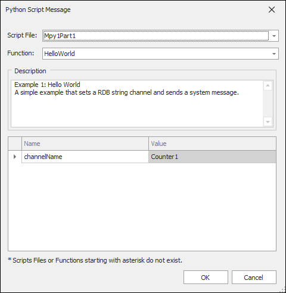
The Schedule Viewer panel now includes the Schedule File Filter property. This property allows you to filter the schedule files that will display in the panel's drop-down list.
Schedule File Filter
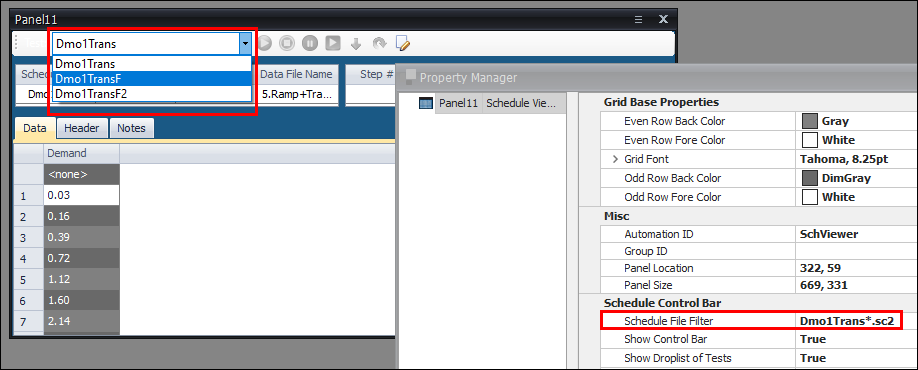
The Show Resource Indicators property has been added to AutomationPanel's Global Property Manager. This property allows you to view/hide the system CPU, memory utilization, and other resource indicators in the status bar.
Resource Indicators
SolutionBuilder's Procedures, Calculations, and Circuit Calculations editors now include the Build Output Bar. Any test build errors that occur after performing a build will be listed in the Build Output Bar, and the applicable filename will display in red font in the left pane of the editor.
Example: Procedure with Errors
The Editable Channel Picklist column type has been added as an available option for schedule columns. This column type allows you to select a channel from a pre-defined list of active channel definition files.
Editable Channel Picklist
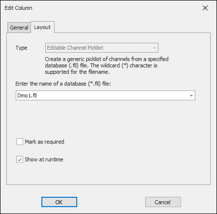
SolutionBuilder's Layouts editor now displays a gray brick background to indicate which panels in a layout will not fully display in AutomationPanel.
Viewing Displayable Area
The Limit Groups editor now includes a property sheet editor, allowing you to quickly update the limit settings for multiple channels simultaneously.
Limit Groups - Property Sheet Editor
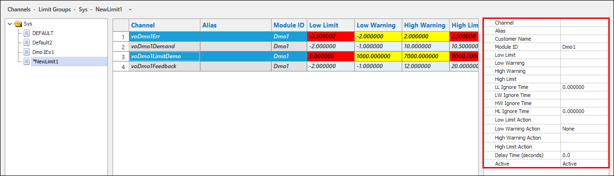
The Log Order Lists editor now includes the Find right-click option, allowing you to quickly search for specific text within the log order list.
Find Dialog*
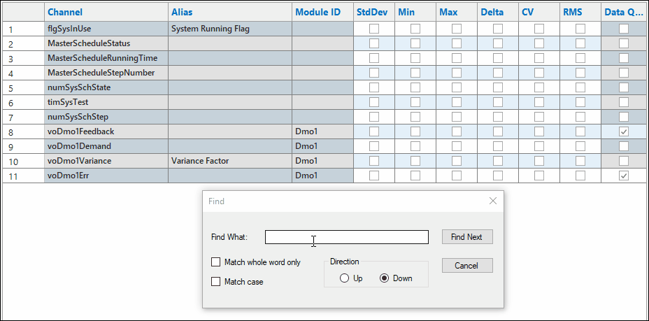
SolutionBuilder now includes the Lookup Tables editor, allowing you to manage and configure lookup tables.
Lookup Tables
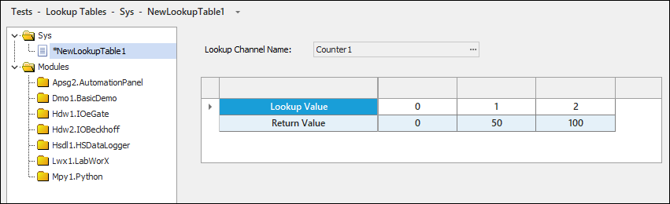
SolutionBuilder's Layouts editor now allows you to reorder tiles directly in a Tile panel via keyboard shortcuts and drag-and-drop. This feature is only available if the Layout Type is set to Table for the Tile panel.
Rearrange with Drag-and-Drop*
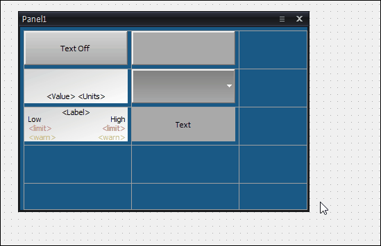
SolutionBuilder's Layouts and Toolbars editors now include the Show Scratchpad right-click option. The Scratchpad provides a floating layout, where you can copy/paste panels from various layouts to temporarily store before using the panels in another layout or toolbar.
Scratchpad
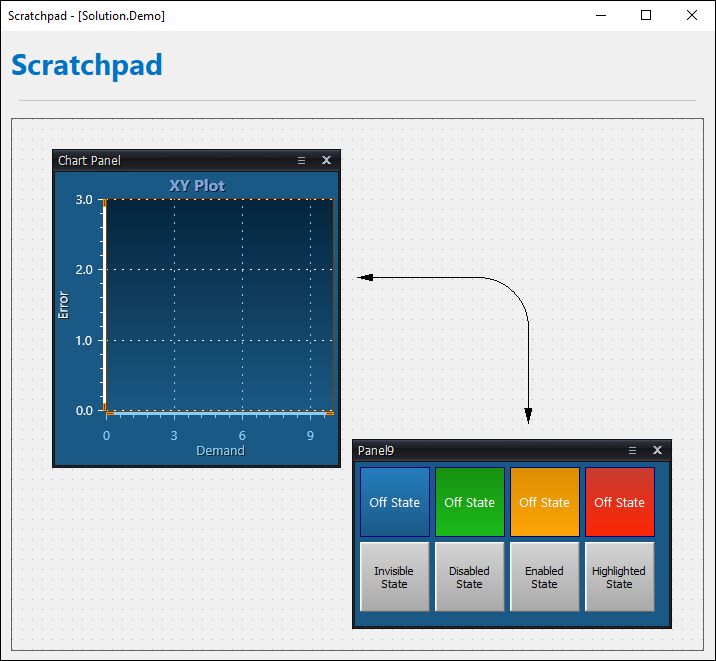
iTest.BTS now supports the AC2000Cycler driver. This driver allows iTest.BTS to control Anderson Electric 2000 series electronic controllers via the EtherCAT interface.
The max polling rate for the AKEngine driver has been increased for smoother high-speed updates.
The AndBalance driver now includes the Overload Monitor Channel, which allows you to monitor the overload condition.
The AvlIndicomAutomation driver log is now recreated on every launch in order to avoid multi-GB file growth.
The Chamber driver now supports the Weiss ASCII 2 chamber type.
The ChromaCycler now supports Chroma 17010H battery cyclers.
The ElektroCycler now supports ElektroAutomatik BT20000 cyclers. In addition, Wireshark captures will stop on the first timeout error, and timeout errors will be recorded to the blackbox log file.
The EtherCAT driver now supports up to 6 instances and 2000 Hz mode on INtime systems. In addition, the Process Priority and IP Address settings are now included in the driver log. The process priority setting now defaults to Realtime.
The MelsecDriver has been added to iTest. This driver interfaces with Mitsubishi PLC devices that support the SLMP on Ethernet or the Data Link Library interface. In addition, it can be configured to use a CC-Link communication board.
The Modbus driver now supports up to 8 instances.
The OPC driver now supports the following mailslot messages: CreateViewTagsFile, SetChan, SetTag, SetTagStr, and ReadFromCache.
iTest now supports the OPC UA driver.
iTest now supports the RotoTest driver.
The VideoCapture driver now supports up to 8 instances.
The XCPMaster now includes CCP download support, big-endian ECUs, robust DTO decode without processor-info calls, and ValueCAN4-Industrial on HS2 bus support.
The following INI settings have been added:
INI Settings
| Setting | Location | Description |
| MaxPanelsPerLayout | Powertek.ini | This setting specifies the maximum number of panels that can be in a layout. |
When launching iTest, iTest will now check if there are any Python packages in the $SUPPORTDIR\PythonPackages folder that do not currently exist in the $SYSTEMDIR\PythonPackages folder. If iTest finds any of these "missing" packages, then it will automatically run PythonEngine to install these packages before continuing to launch.
The following Python packages have been added:
The ArraySum VCL function has been added. This function can be used to calculate the sum for a subset of values located between two indexes in an array.
SolutionBuilder's Parameters editor now includes the LL Ignore Time and HL Ignore Time columns. These columns can be used to configure the ignore times for user-defined parameters.
Ignore Time Columns
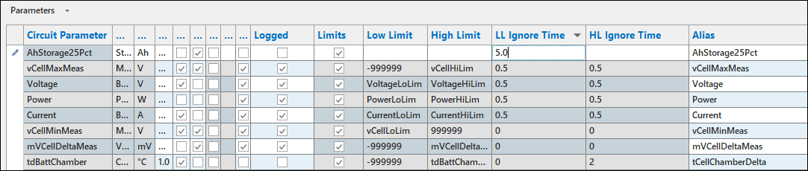
The RecoveredDataTool has been created to help process data files found in RecoveredData folders and merge those files into the project data log.
RecoveredDataTool Interface
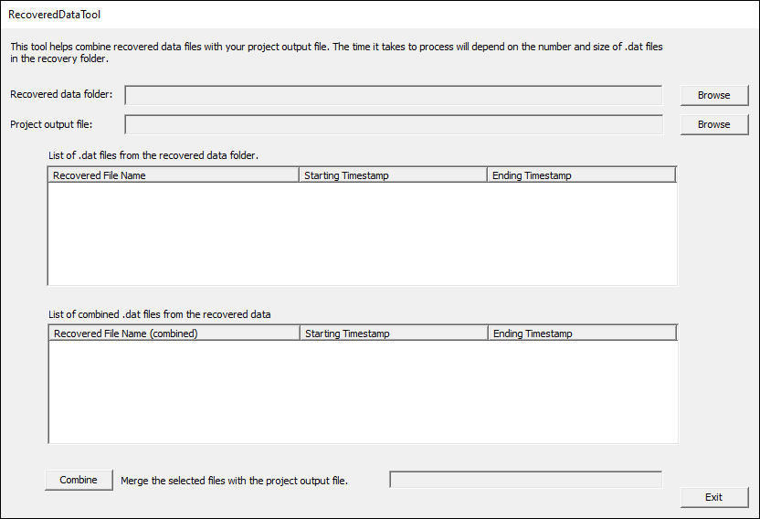
The DLBAxisMixEmpty config.ini setting has been deprecated. The Data Log Browser now utilizes the Axis Mix Empty Units property in order to determine if channels with the same units can be moved onto the same Y-axis.
The extension for Visual Studio Code that allows for editing and debugging VCL procedures has been deprecated.
The following matrixes detail the iTest to OS Compatibility, OS to RTOS Compatibility, RTOS to PC Compatibility, and the iTest Product Life cycle.
iTest to OS Compatibility Matrix
| iTest to OS Compatibility | Windows | Test Automation | |||||||||||||
|---|---|---|---|---|---|---|---|---|---|---|---|---|---|---|---|
| iTest 4.5 | iTest 4.4 | iTest 4.3 | iTest 4.2 | iTest 4.1 | iTest 4.0 | iTest 3.9 | iTest 3.8 | iTest 3.7 | iTest 3.6 | iTest 3.5 | iTest 3.4 | iTest 3.2 | iTest pre 3.2 | ||
| GUI OS | Windows 11 Pro |  |
|
|
|
X | X | X | X | X | X | X | X | X | X |
| Windows 10 Pro | |
|
|
|
|
|
|
|
|
X | X | X | X | X | |
| Win 7 Pro 64bit | X | X | X | X | X | |
|
|
|
|
|
|
X | X | |
| Windows XP | X | X | X | X | X | X | X | X | X | X | X | |
|
|
|
| RTOS | Xenomai | |
|
|
|
|
|
|
X | X | X | X | X | X | X |
| INtime 7.X | |
|
|
X | X | X | X | X | X | X | X | X | X | X | |
| INtime 6.3 | |
|
|
|
|
|
|
|
|
X | X | X | X | X | |
| INtime 5.2 | X | X | X | X | X | |
|
|
|
|
|
X | X | X | |
| INtime 4.2 | X | X | X | X | X | |
|
|
|
|
|
|
X | X | |
| INtime 3.13 | X | X | X | X | X | X | |
|
|
|
|
|
|
X | |
| VxWorks (VM4500) | X | X | X | X | X | X | X | X | X | X | |
|
|
|
|
| Legend | |||||||||||||||
| Supported | |
||||||||||||||
| Not Compatible | X | ||||||||||||||
OS to RTOS Compatibility Matrix
| OS to RTOS Compatibility | Windows | RTOS | ||||
|---|---|---|---|---|---|---|
| INtime 7.X | INtime 6.X | INtime 5.2 | INtime 4.2 | INtime 3.13 | ||
| Host OS | Windows 11 Pro | |
X | X | X | X |
| Windows 10 Pro | X | |
X | X | X | |
| Win 7 Pro 64bit | X | |
|
|
X | |
| Windows XP | X | O | O | O | |
|
| Legend | ||||||
| Supported | |
|||||
| Not Compatible | X | |||||
| Unsupported but should work | O | |||||
RTOS to PC Compatibility Matrix
| RTOS to PC Compatibility | Windows | RTOS | ||||
|---|---|---|---|---|---|---|
| INtime 7.X | INtime 6.X | INtime 5.2 | INtime 4.2 | INtime 3.13 | ||
| PC | HP 1HU (Quad core) | X | X | |
X | X |
| Dell 1HU | X | |
O | O | O | |
| Lite RT (Quad Core) | X | |
|
O | O | |
| Advantec i7 (6th gen Quad core) | X | |
X | X | X | |
| Advantec i7 (3rd gen Quad core) | X | X | X | |
X | |
| Advantec Core Duo (Dual Core) | X | X | X | X | |
|
| SuperLogics 2U i7 (12th gen 12 Core) | |
|
X | X | X | |
| Legend | ||||||
| Supported | |
|||||
| Not Compatible | X | |||||
| Unsupported but should work | O | |||||
iTest Product Life Cycle
| Product Version | Year | |||||||||||||||||
|---|---|---|---|---|---|---|---|---|---|---|---|---|---|---|---|---|---|---|
| 2008 | 2009 | 2010 | 2011 | 2012 | 2013 | 2014 | 2015 | 2016 | 2017 | 2018 | 2019 | 2020 | 2021 | 2022 | 2023 | 2024 | 2025 | |
| iTest 2.3 | |
|
|
O | O | O | O | O | X | X | X | X | X | X | X | X | X | X |
| iTest 3.0 | - | - | |
|
O | O | O | O | X | X | X | X | X | X | X | X | X | X |
| iTest 3.1 | - | - | - | |
|
|
O | O | O | X | X | X | X | X | X | X | X | X |
| iTest 3.2 | - | - | - | - | |
|
|
O | O | O | X | X | X | X | X | X | X | X |
| iTest 3.4 | - | - | - | - | - | - | |
|
O | O | O | X | X | X | X | X | X | X |
| iTest 3.5 | - | - | - | - | - | - | - | |
|
O | O | O | X | X | X | X | X | X |
| iTest 3.6 | - | - | - | - | - | - | - | - | |
|
O | O | O | X | X | X | X | X |
| iTest 3.7 | - | - | - | - | - | - | - | - | - | |
|
O | O | O | X | X | X | X |
| iTest 3.8 | - | - | - | - | - | - | - | - | - | - | |
|
O | O | O | X | X | X |
| iTest 3.9 | - | - | - | - | - | - | - | - | - | - | - | |
|
O | O | O | X | X |
| iTest 4.0 | - | - | - | - | - | - | - | - | - | - | - | - | |
|
O | O | O | X |
| iTest 4.1 | - | - | - | - | - | - | - | - | - | - | - | - | - | |
|
O | O | O |
| iTest 4.2 | - | - | - | - | - | - | - | - | - | - | - | - | - | - | |
|
O | O |
| iTest 4.3 | - | - | - | - | - | - | - | - | - | - | - | - | - | - | - | |
|
O |
| iTest 4.4 | - | - | - | - | - | - | - | - | - | - | - | - | - | - | - | - | |
|
| iTest 4.5 | - | - | - | - | - | - | - | - | - | - | - | - | - | - | - | - | - | |
| Legend | ||||||||||||||||||
| Current Version | |
|||||||||||||||||
| Bugfix Only | O | |||||||||||||||||
| Not Supported | X | |||||||||||||||||
| Not Available | - | |||||||||||||||||